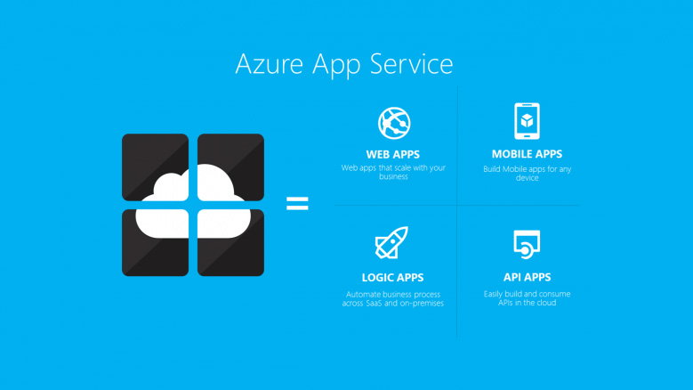

Azure App Service: Hospede Sua Aplicação Sem Gerenciar Servidores
Descubra como o Azure App Service simplifica o deploy de aplicações web com escalabilidade automática, HTTPS gratuito e integração nativa com GitHub Actions.

O que é Azure App Service?
Azure App Service é uma plataforma PaaS (Platform as a Service) da Microsoft para hospedagem de aplicações web, APIs REST e backends mobile. Com ele, você faz deploy da sua aplicação sem se preocupar com sistema operacional, patches de segurança, escalabilidade de infraestrutura ou balanceamento de carga.
Você cuida do código. O Azure cuida do resto.
Linguagens e Frameworks Suportados
O App Service suporta nativamente as principais stacks de desenvolvimento:
- Node.js (versões LTS suportadas)
- Python (3.x)
- .NET (Core e Framework)
- Java (8, 11, 17)
- PHP
- Ruby
- Docker (containers customizados)
Criando seu Primeiro App Service
O processo de criação é direto pelo portal do Azure:
- Acesse o portal.azure.com e faça login
- Clique em "Criar um recurso" → "Web" → "Aplicativo Web"
- Defina um nome único para a aplicação (será parte da URL)
- Escolha o stack de runtime (ex: Node.js 20)
- Selecione o sistema operacional (Linux é recomendado para Node.js)
- Escolha um Plano de Serviço de Aplicativo (define CPU, memória e preço)
- Clique em "Analisar + criar"
Após criar, sua aplicação já estará disponível numa URL pública no formato seu-app.azurewebsites.net.
Configurando CI/CD com GitHub Actions
A integração com GitHub é um dos pontos fortes do App Service. Para configurar deploy automático:
- No App Service, acesse "Centro de Implantação"
- Selecione "GitHub" como fonte
- Autorize o acesso ao seu repositório
- Selecione a organização, repositório e branch
- O Azure cria automaticamente um workflow no GitHub Actions
A partir daí, cada push na branch configurada dispara um deploy automático.
Configurações de Ambiente
Variáveis de ambiente e segredos são gerenciados em "Configuração" → "Configurações do aplicativo". Nunca inclua credenciais no código — use as Application Settings do App Service para:
- Connection strings de banco de dados
- Chaves de API e segredos
- Variáveis de configuração (ex: NODE_ENV=production)
- URLs de serviços externos
Essas configurações ficam criptografadas e são injetadas como variáveis de ambiente em runtime.
Domínio Customizado e HTTPS
O App Service oferece certificado SSL/TLS gratuito para domínios customizados:
- Registre um domínio no seu provedor preferido (GoDaddy, Registro.br, etc.)
- Adicione o domínio em "Domínios personalizados" no App Service
- Configure os registros DNS apontando para o App Service
- Ative o certificado gratuito em "Certificados TLS/SSL"
- Force HTTPS em "Configurações TLS/SSL" → "HTTPS somente"
Planos de Serviço e Custos
O App Service tem planos para todos os tamanhos de projeto:
- F1 (Free): ideal para testes, sem SLA, recursos limitados
- B1 (Basic): para projetos pequenos de produção, ~$13/mês
- S1 (Standard): com autoscaling e slots de staging, ~$56/mês
- P1v3 (Premium): alta performance para cargas maiores
Para a maioria dos blogs e APIs pessoais, o plano B1 é suficiente e econômico.
Staging Slots: Deploy Seguro
Nos planos Standard e acima, você pode criar Deployment Slots — ambientes separados (staging, homologação) que podem ser trocados com produção com zero downtime. O fluxo recomendado é:
- Deploy automático vai para o slot de staging
- Valide a nova versão no ambiente de staging
- Execute um "Swap" para promover staging para produção
- Se algo der errado, faça o swap reverso em segundos
Conclusão
Azure App Service remove a barreira de entrada para hospedar aplicações profissionais na nuvem. Sem servidores para gerenciar, com escalabilidade automática e CI/CD integrado, você vai do código para produção em minutos. É a escolha ideal para startups, projetos pessoais e APIs corporativas que precisam de confiabilidade sem complexidade operacional.